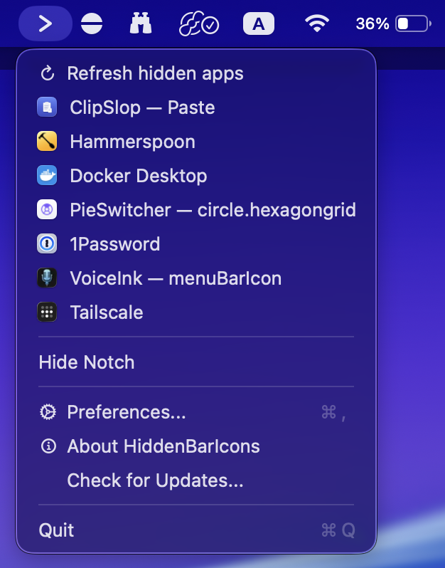

Reclaim your menu bar from the notch.
The MacBook notch swallows your overflow menu-bar icons. HiddenBarIcons hides them on purpose — and brings every one back with a single click or ⌘⌥B.
Universal · Apple Silicon & IntelAuto-updatesNo Dock icon

Two items. One that hides, one that reveals.
HiddenBarIcons adds a separator and an arrow to your menu bar. That's the whole interface.
-
1 |
Set the separator
⌘-drag the icons you want to tuck away to the left of the separator. Everything else stays put.
-
2
Click to collapse
Click the arrow or press ⌘⌥B. The separator stretches and pushes the icons off-screen — behind the notch.
-
3
Reach what's hidden
Right-click the arrow for a live list of the apps now hidden under the notch — click any one to open it instantly.
Small app. Surprisingly thorough.
One-click collapse
Hide and reveal your overflow icons instantly. No menus, no fuss — just the arrow.
Global ⌘⌥B hotkey
Toggle from anywhere without reaching for the mouse. Works system-wide, in any app.
Auto-collapse
Tuck the icons away automatically after a delay you choose. A tidy bar that tidies itself.
Full-expand mode
Temporarily clears the whole bar — handy when you need every pixel of space back.
Hide / Show Notch
On notched Macs, switch the display to a clean notchless 16:10 mode in one tap.
Always up to date
Built-in auto-updates via Sparkle. Notarized & code-signed, so it just works.